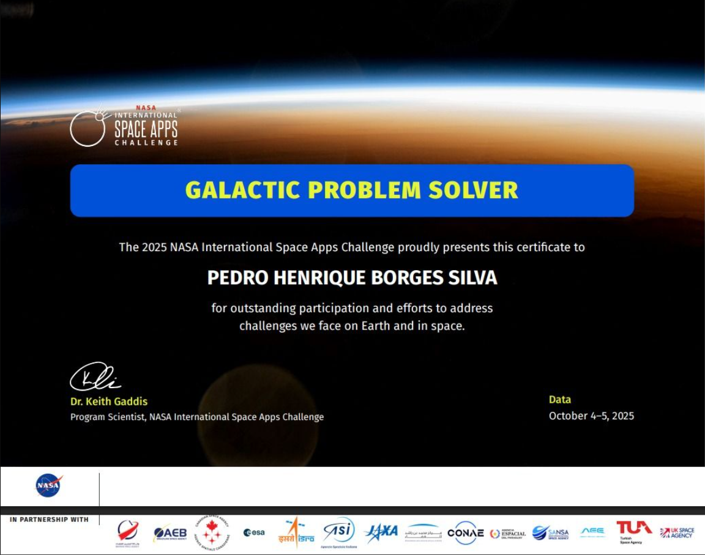

AstroPose / CyberPose
O AstroPose, também conhecido como CyberPose, é um projeto que explora a interseção entre interação humana e tecnologia. Utilizando conceitos de pose estimation e interfaces visuais interativas, o projeto cria uma experiência inovadora onde o usuário interage com elementos digitais de forma intuitiva e envolvente.

Sobre o Projeto
O AstroPose/CyberPose nasceu da vontade de explorar como o corpo humano pode ser utilizado como interface de controle em aplicações tecnológicas. O projeto utiliza técnicas de pose estimation para capturar os movimentos do usuário e traduzi-los em interações visuais na tela.
A ideia central é criar uma experiência onde a tecnologia responde ao corpo, permitindo que o usuário controle elementos visuais, navigate por interfaces ou interaja com cenários digitais usando apenas seus movimentos, sem necessidade de controles físicos tradicionais.
O projeto combina conceitos de visão computacional, design de interação e desenvolvimento web, resultando em uma aplicação que é ao mesmo tempo tecnicamente desafiadora e visualmente impactante.
Tecnologias e Conceitos
👁️ Visão Computacional
Captura e interpretação dos movimentos do corpo humano através de câmera, utilizando bibliotecas de pose estimation para mapear articulações e gestos.
🎨 Interface Visual
Design interativo que responde em tempo real às ações do usuário, com elementos visuais dinâmicos, cenários 3D e feedback visual imediato.
🌐 Desenvolvimento Web
Construção de toda a aplicação em plataforma web, garantindo acessibilidade e facilidade de uso sem necessidade de instalação de software adicional.
Resultados e Aprendizados
O desenvolvimento do AstroPose/CyberPose gerou aprendizados significativos em diversas áreas. Trabalhar com pose estimation me permitiu entender como funciona o processamento de imagem em tempo real e como transformar dados de movimento em interações significativas.
Além do aspecto técnico, o projeto me ensinou sobre design de experiência do usuário — como criar interfaces que sejam intuitivas e envolventes, onde a tecnologia serve ao usuário e não o contrário.